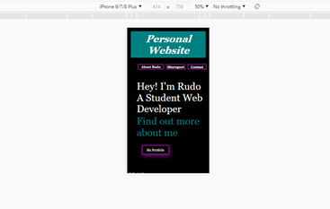

Site Report
Introduction
In the beginning, I was pretty excited about learning the module and could not wait to see the progress I
would make in the class. Considering I had no prior experience with programming, I really looked forward
to creating the website. The initial stages of the web development module were reasonably
understandable. In the first month, we covered the following topics :
1. Introduction to HTML covered the basics of Html, such as Html tags, attributes, and how to create
a web page.
2. Introduction to CSS covered the basic of CSS, such as the syntax, the tags, and CSS styles.
3. The history of the web.
I was able to perform all the assigned exercises in this first month. I particularly enjoyed
creating elements on the screen and setting them styles through CSS.
Some the exercises perform are below:
Next Stage....
As the semester went on, we began to tackle slightly more challenging topics. They were not as easy
as the first few exercises, and they needed a lot more logical thinking. In these exercises, I learnt
that the code does not always run as well as you expect it to. Some of the challenges I faced whilst
coding at this stage included:
1. Elements being misplaced on the screen.
2. Animations are not running as expected e.g. flips up instead of down.
3. Trouble adjusting the element's sizes and colours to my desired output.
4. Forgetting to close a Tags.
5. Inconsistency with IDs and class names.
6. Over loading Selectors e.g #navigation ul li a img{…..}
Coding and Design
With regards to designing this webpage, my aim was to create a functional and straightforward website.
Although it appears simple, it was not so easy. The first problem I faced was my columns overlapping or
being too small, and when I would attempt to place an image or a paragraph within the columns, their
positions constantly changed. It was pretty frustrating to have to readjust the styles constantly to
achieve the desired look. Additionally, I had challenges making the website responsive on both mobile
webpages and desktop webpages.These challenges have helped to me understand Html and CSS better and,
how best they can work together. Some of the progress I made throughout the creation of this website can
be seen below. The diagrams below are the mobile verion of the website and the desktop version respectively.

Code Validation
The following images reveal the validated code: